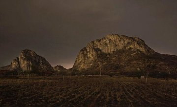

Chalcatzingo que significa lugar de Los Chalcas o de Los Jades.
Es un sitio con una asombrosa riqueza prehispánica con influencia Olmeca construida al pie de los cerros, Chalcatzingo y Delgado. Su gran atractivo, son los relieves tallados sobre estelas, situados en las laderas de los cerros, así como en las casas y altares en la cima del cerro Chalcatzingo, dedicado a los rituales; también se aprecia el arte monumental de sus pirámides. El estilo es semejante al de La Venta, Tabasco. Se dice que se originó por el intercambio entre ambas localidades que vivían su etapa de apogeo.
Para conocer bien la zona arqueológica, llega muy temprano. Es indispensable que uses ropa ligera y muy cómoda. El recorrido inicia en la base del cerro y concluye en la punta, tiene alrededor de 200 metros de altura. A lo largo del camino se aprecian grandes rocas con relieves. En la entrada “El Dador de Agua” Se interpreta como alabanza a la lluvia, antes había un manantial que suministraba agua al lugar, fundado alrededor del siglo XV A.C
Durante el camino a la cima, en las laderas del cerro, de tramo en tramo te encuentras con “Los Jaguares”, “La Fertilidad” y “El volador” entre otros petrograbados, obras de arte en todo su esplendor. Además, se contemplan bellos paisajes y enormes raíces de árboles de amate. Si tienes suerte y el día está despejado podrás ver el Popocatépetl.
En esta zona arqueológica descubierta en 1934, de manera casual, destacan las construcciones como la Terraza 1, en la que se localizaban las residencias de los miembros de la élite; La Terraza 25 cuenta con un patio y La Estructura 4 es la mayor de las casas, es una edificación de planta casi cuadrada, de aproximadamente 70 metros por lado. En sus inmediaciones se han descubierto tumbas de personajes de alto linaje, los cuales portaban ornamentos de jade y espejos de magnetita.
